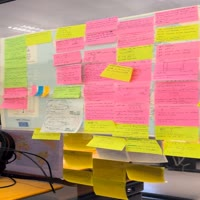

🎓 I'm a graduate research engineer focusing on image and video coding
📽️ My academic journey began with a master’s degree, where I focused on video
quality assessment and developed an open-source software called QualityPulse.
This interest in image/video coding continued into my PhD,
where I study learning-based image coding, focusing on both quality assessment
and perceptual optimization
My Journey
Sep 2021-Now
PhD Researcher at Multimedia Signal Processing Lab
Deep learning-based image coding: Quality assessment and perceptual optimization

Feb 2023 - Now
Collaborate Researcher at JPEG Standardization Group
Establishing guidelines for subjective image quality assessment
Sep 2016 - Sep 2020
M.Sc Researcher at Multimedia Signal Processing Lab
Video quality assessment
Technical Skills
Programming languages
Frameworks and libraries
Web development and databases
Python
C
C#
C++
MATLAB
PyTorch
TensorFlow
Keras
FFmpeg
Scikit-learn
Pandas
NumPy
Seaborn
OpenCV
HTML
CSS
JavaScript
Node.js
ASP.NET
MySQL
MongoDB
Portfolio
Tap for more details
Python
QualityPulse
The heartbeat of your video quality
Python
AIC
JPEG AIC reference software
Python
IDSQS
Subjective data collection and analysis
Python
QualityLens
Quantifying blocky and blurry
distortions in an image
Python
LBPS-EIC
Preference estimation with the
associated uncertainty
Python
PS-PC
Efficent pairwise comparison subjective
test by using both human and AI
Portfolio
Tap for more details
QualityPulse
The heartbeat of your video quality
AIC
JPEG AIC reference software
IDSQS
Subjective data collection and analysis
QualityLens
Quantifying blocky and blurry
distortions in an image
LBPS-EIC
Preference estimation with the
associated uncertainty
PS-PC
Efficent pairwise comparison subjective
test by using both human and AI
QualityPulse is an innovative interface designed to monitor video quality in real
time, inspired by the way an electrocardiogram visualizes heart activity. The system
evaluates video quality on a scale from 0 to 100, with 100 representing the highest
quality.
The model is trained using the VMAF quality metric and employs bitstream
features
(e.g., quantization parameter) extracted from H.265 videos. Users can upload videos
in the .m3u8 format or evaluate live streaming videos directly from Channel 3 of
Iranian Broadcasting TV.
This interface simplifies quality evaluation, particularly for streaming
applications, by providing a visual and intuitive representation of video
performance.
AIC
The JPEG Committee has initiated a new activity on the Assessment of Image Coding
(AIC) to develop the AIC-3 standard. This standard focuses on methodologies for
subjective quality assessment of images, covering visual quality levels from high to
mathematically lossless.
As part of this initiative, a web-based platform was developed to facilitate the
evaluation of proposals for JPEG AIC-3. The interface supports pairwise comparison
for subjective image quality assessment, streamlining the collection and analysis of
evaluating data.
IDSQS
The IDSQS dataset focuses on subjective test analysis for image quality assessment.
Subjective ratings were collected from participants, and the data underwent thorough
processing, including outlier removal, data cleaning, and quality scale
reconstruction, to ensure reliability and accuracy.
QualityLens
The QualityLense project analyzes each video frame to measure blocky and blurry
distortions. These distortions are quantified by transforming video frames into the
Fourier domain and evaluating different frequency bands of the Fourier
decomposition. This approach provides a detailed assessment of visual artifacts in
the video.
LBPS-EIC
The LBPS-EIC project aimed to enhance the efficiency of pairwise comparison
subjective tests for image quality assessment. The research involved predicting
preference estimations for image pairs while measuring associated uncertainties,
including both data and model uncertainty. An innovative approach was employed to
combine these uncertainties, enabling the selection of an optimal subset of image
pairs for an efficient and effective pairwise subjective testing process.
PS-PC
The PS-PC project focuses on leveraging JPEG AI image quality metrics to extract
image features. Using these features, a predictor and classifier were trained to
estimate human preferences between image pairs. The system is designed to either
accept its estimation or defer to human input for cases requiring subjective
judgment. This project exemplifies effective collaboration between human
decision-making and machine learning for improved image quality assessment.
Uncertainty-driven Sampling for Efficient Pairwise Comparison
Subjective Assessment
Assessing image quality is crucial in image processing
tasks
such as compression,
super-resolution, and denoising. While subjective assessments involving human
evaluators provide the most accurate quality scores, they are impractical for
large-scale or continuous evaluations due to their high cost and time requirements.
Pairwise comparison subjective assessment tests, which rank image pairs instead of
assigning scores, offer more reliability and accuracy but require numerous
comparisons, leading to high costs. Although objective quality metrics are more
efficient, they lack the precision of subjective tests, which are essential for
benchmarking and training learning-based quality metrics. This paper proposes an
uncertainty-based sampling method to optimize the pairwise comparison subjective
assessment process. By utilizing deep learning models to estimate human preferences
and identify pairs that need human labeling, the approach reduces the number of
required comparisons while maintaining high accuracy. The key contributions include
modeling uncertainty for accurate preference predictions and for pairwise sampling.
The experimental results demonstrate superior performance of the proposed approach
compared to traditional active sampling methods. Software is publicly available at:
shimamohammadi/LBPS-EIC
Authors:
Shima Mohamamdi, joao Ascenso
Publication:
Submitted to IEEE Transactions on Multimedia
Fine-grained subjective visual
quality assessment for high-fidelity compressed images
Advances in image compression, storage, and display technologies have made
high-quality images and videos widely accessible.
At this level of quality, distinguishing between compressed and original content
becomes difficult, highlighting the need for assessment methodologies that are
sensitive to even the smallest visual quality differences.
Conventional subjective visual quality assessments often use absolute category
rating scales, ranging from ``excellent'' to ``bad''. While suitable for
evaluating more pronounced distortions, these scales are inadequate for
detecting subtle visual differences.
The JPEG standardization project AIC is currently developing a subjective image
quality assessment methodology for high-fidelity images.
This paper presents the proposed assessment methods, a dataset of high-quality
compressed images, and their corresponding crowdsourced visual quality ratings.
It also outlines a data analysis approach that reconstructs quality scale values
in just noticeable difference (JND) units.
The assessment method uses boosting techniques on visual stimuli to help
observers detect compression artifacts more clearly. This is followed by a
rescaling process that adjusts the boosted quality values back to the original
perceptual scale.
This reconstruction yields a fine-grained, high-precision quality scale in JND
units, providing more informative results for practical applications. The
dataset and code to reproduce the results will be available at
jpeg-aic/dataset-BTC-PTC-24.
Authors:
Michela Testolina, Mohsen Jenadeleh, Shima Mohammadi, Shaolin Su, Joao
Ascenso, Touradj Ebrahimi, Jon Sneyers and Dietmar Saupe
Publication:
Data Compression Conference, 2025
Fidelity-preserving Learning-Based Image Compression: Loss
Function and Subjective
Evaluation Methodology
Learning-based image compression methods have
emerged as state-of-the-art, showcasing higher performance compared to
conventional
compression solutions. These data-driven
approaches aim to learn the parameters of a neural network
model through iterative training on large amounts of data. The
optimization process typically involves minimizing the distortion
between the decoded and the original ground truth images. This
paper focuses on perceptual optimization of learning-based image
compression solutions and proposes: i) novel loss function to be
used during training and ii) novel subjective test methodology
that aims to evaluate the decoded image fidelity. According to
experimental results from the subjective test taken with the
new methodology, the optimization procedure can enhance image
quality for low-rates while offering no advantage for high-rates.
Index Terms—Learning-based image compression, generative
adversarial network, subjective quality assessment
Authors:
Shima Mohamamdi, Yaojun Wu, Joao Ascenso
Publication:
IEEE International Conference on Visual Communications and Image Processing (VCIP), Jeju, Korea, December, 2023
Predictive Sampling for Efficient Pairwise Subjective Image
Quality Assessment
Subjective image quality assessment studies are used in
many
scenarios, such as
the
evaluation of compression, super-resolution, and
denoising solutions. Among the available subjective test methodologies, pair
comparison is attracting popularity due to its simplicity,
reliability, and robustness to changes in the test conditions, e.g.
display resolutions. The main problem that impairs its wide acceptance is that
the
number of pairs to compare by subjects grows
quadratically with the number of stimuli that must be considered.
Usually, the paired comparison data obtained is fed into an aggregation model to
obtain a final score for each degraded image and
thus, not every comparison contributes equally to the final quality
score. In the past years, several solutions that sample pairs (from all
possible combinations) have been proposed, from random sampling
to active sampling based on the past subjects’ decisions. This paper
introduces a novel sampling solution called Predictive Sampling for
Pairwise Comparison (PS-PC) which exploits the characteristics
of the input data to make a prediction of which pairs should be
evaluated by subjects. The proposed solution exploits popular machine learning
techniques to select the most informative pairs for
subjects to evaluate, while for the other remaining pairs, it predicts
the subjects’ preferences. The experimental results show that PS-PC
is the best choice among the available sampling algorithms with
higher performance for the same number of pairs. Moreover, since
the choice of the pairs is done a priori before the subjective test
starts, the algorithm is not required to run during the test and thus
much more simple to deploy in online crowdsourcing subjective
tests.
Authors:
Shima Mohamamdi, Joao Ascenso
Publication:
ACM International Conference on Multimedia (MM ’23), Ottawa, Canada,
October,
2023
Perceptual impact of the loss function on deep-learning image
coding performance
Nowadays, deep-learning image coding solutions have
shown similar or better compression efficiency than conventional
solutions based on hand-crafted transforms and spatial prediction
techniques. These deep-learning codecs require a large training
set of images and a training methodology to obtain a suitable
model (set of parameters) for efficient compression. The training
is performed with an optimization algorithm which provides a way
to minimize the loss function. Therefore, the loss function plays a
key role in the overall performance and includes a differentiable
quality metric that attempts to mimic human perception. The main
objective of this paper is to study the perceptual impact of several
image quality metrics that can be used in the loss function of the
training process, through a crowdsourcing subjective image quality
assessment study. From this study, it is possible to conclude that
the choice of the quality metric is critical for the perceptual performance of
the
deep-learning codec and that can vary depending
on the image content.
Index Terms—Learni
Authors:
Shima Mohamamdi, Joao Ascenso
Publication:
Picture Coding Symposium (PCS), San Jose, CA, USA, December, 2022
On the performance of subjective visual quality assessment
protocols for nearly visually
lossless image compression
The past decades have witnessed rapid growth in imaging
as a
major form of communication between individuals. Due to recent
advances in capture, storage, delivery and display technologies,
consumers demand improved perceptual quality while requiring
reduced storage. In this context, research and innovation in lossy
image compression have steered towards methods capable of achieving high
compression
ratios without compromising the perceived
visual quality of images, and in some cases even enhancing the latter.
Subjective visual quality assessment of images plays a fundamental
role in defining quality as perceived by human observers. Although
the field of image compression is constantly evolving towards efficient
solutions
for higher visual qualities, standardized subjective
visual quality assessment protocols are still limited to those proposed in ITU-R
Recommendation BT.500 and JPEG AIC standards.
The number of comprehensive and in-depth studies where different protocols are
compared is still insufficient. Moreover, previous
works have not investigated the effectiveness of these methods on
higher quality ranges, using recent image compression methods. In
this paper, subjective visual scores collected from three subjective
image quality assessment protocols, namely the Double Stimulus
Continuous Quality Scale (DSCQS) and two test methods described
in the JPEG AIC Part 2 standard, are compared between different
laboratories under similar controlled conditions. The analysis of the
experimental results has revealed that the DSCQS protocol is highly
influenced by the quality of the reference images and experience of
the subjects, while the JPEG AIC Part 2 specifications produce more stable
results
but are expensive and only suitable for a limited range
of qualities. These emphasize the need for new robust subjective
image quality assessment methodologies able to discriminate in the
range of qualities generally demanded by consumers, i.e. from high
to nearly visually lossless
Authors:
Michela Testolina, Davi Lazzarotto, Rafael Rodrigues, Shima Mohammadi, João
Ascenso, António M. G. Pinheiro, Touradj Ebrahimi
Publication:
ACM International
Conference on Multimedia (MM ’23), Ottawa, Canada, October, 2023
Evaluation of sampling algorithms for a pairwise subjective
assessment methodology
Subjective
assessment tests are often employed to
evaluate image processing systems, notably image and video
compression, super-resolution among others and have been used
as an indisputable way to provide evidence of the performance
of an algorithm or system. While several methodologies can be
used in a subjective quality assessment test, pairwise comparison
tests are nowadays attracting a lot of attention due to their
accuracy and simplicity. However, the number of comparisons
in a pairwise comparison test increases quadratically with the
number of stimuli and thus often leads to very long tests, which is
impractical for many cases. However, not all the pairs contribute
equally to the final score and thus, it is possible to reduce the
number of comparisons without degrading the final accuracy. To
do so, pairwise sampling methods are often used to select the
pairs which provide more information about the quality of each
stimuli. In this paper, a reliable and much-needed evaluation
procedure is proposed and used for already available methods
in the literature, especially considering the case of subjective
evaluation of image and video codecs. The results indicate that an
appropriate selection of the pairs allows to achieve very reliable
scores while requiring the comparison of a much lower number
of pairs.
Authors:
Shima Mohammadi, Joao Ascenso
Publication:
IEEE International Symposium on Multimedia (ISM), Italy, December, 2022